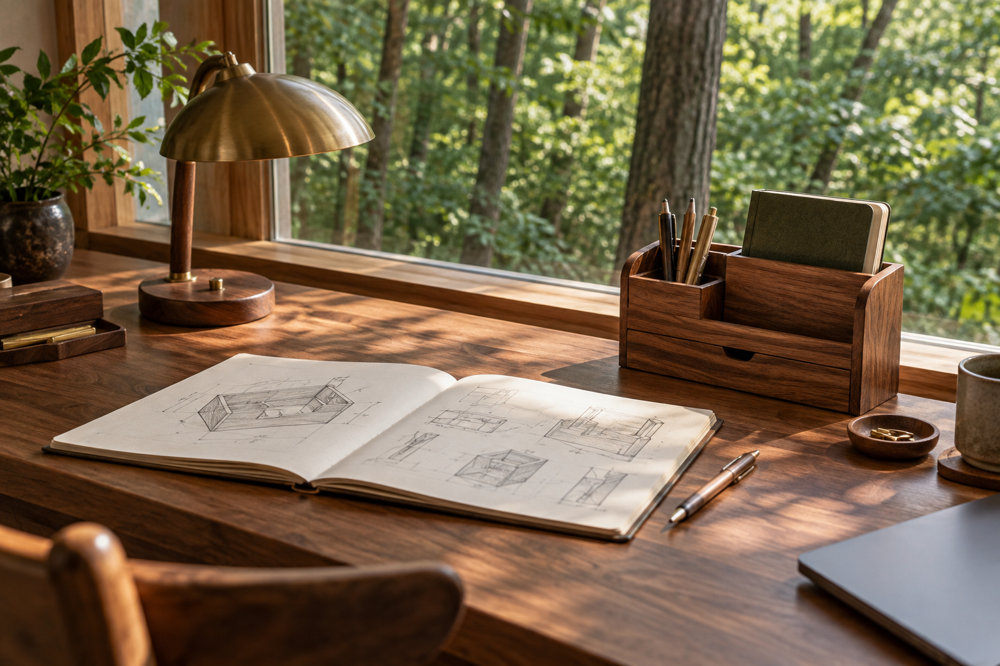

KNOWLEDGE · CRAFT · EXPLORATION
富知于心，
野拓于行。
记录思考，创造器物，
探索技术与生活之间的可能。
让平凡的日常，
也有值得专注的美好。

看见更大的世界。THE ART OF MAKING
行 · 造物
SELECTED WORKS物而有温度 · 技而近生活
知 · 手记
FIELD NOTES在记录中，接近自己的答案
THE STORY OF FUCHINOBE
让思考落地，
让探索发生。
关于富知野
从「渊野边」到「富知野」，FUCHINOBE 有了新的中文表达。富，是内心的丰盈；知，是持续的求索；野，是不拘常规的探索。
富知于心，野拓于行。在知识、技术与手作之间，把好奇变成行动，把想法变成可以触摸、可以使用的东西。
富知野 FUCHINOBE